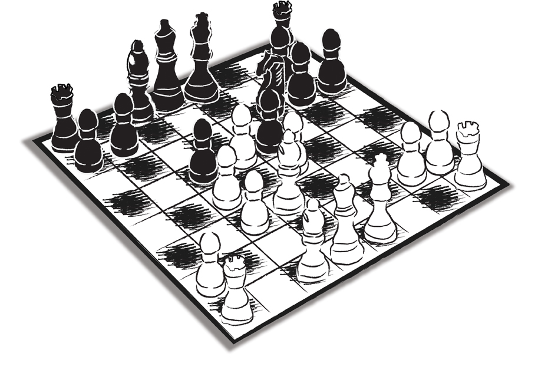

1980’lerin ortasi… Karacan Yayınları’nın Genel Yayın Yönetmeniyim. Ali Karacan’ın saçlarında henüz beyaz yok. En atak dönemi. Babası Ercüment Bey, Semiramis Pekkan Hanım’la evli ve ABD’de yaşıyor. Bütün işi büyük oğluna bırakmış. Ali Bey küçük bir imparatorluğu tek başına yönetiyor.
Çok başarılıyız. Büyüme hızımız baş döndürücü düzeyde. Beş yıl sonra yakalayacağımız sektör birinciliğine oynuyoruz. Ben 30’larımın ortasındayım. Olgunluğun bütün avantaj ve dezavantajlarını kullanıyorum.
Zaten potansiyelimiz var. Üstüne bir de çok çalışıp çok üretme eklenince çam devirip pot kırmanın günlük hayatımın ayrılmaz parçası haline geldiği yıllar…
Bir gün Ali Karacan odasına çağırdı. “Ali Bey, bir dakika uğrarsanız sizi çok değer verdiğim, aile büyüğümüz sayılacak insanlarla tanıştıracağım”…
Yeni gelmişim yayınevine. Kimseyi tanımıyorum. Tam susmak, izlemek ve dinlemek gereken bir durum…
Yayınevine ilk yerleştiğimizde Ali Karacan’ın kullandığı en dipteki odada, yuvarlak toplantı masasının çevresinde oturuyorlardı. Ali Karacan annesi Cemile Hanım’ı ve “Filiz Hanım” diyerek bir başka hanımefendiyi tanıştırdı. Üçüncü bir hanım daha vardı masada. Onun da adını söyledi ama ben tam çıkaramadım…
Bugün olsa, kesinlikle o odaya girmeden kimin kim olduğunu öğrenir, hepsinin cemaziyelevvelini iyice araştırır, sahaya öyle atılırdım…
Görücüye çıktığımı ‘okuyamamıştım’. Biraz da o yüzden elimi kolumu sallaya sallaya odaya daldım. Ali Bey risk almıştı. Daha önceki yöneticilik tecrübeleriyle henüz kendini tam olarak kanıtlamamış birini Genel Yayın Yönetmeni olarak atamıştı. Onun için de biraz tedirgin, benim kendimi nasıl konumlayacağımı merak etmiş olmalıydı.
Masada oturanlardan rahmetli Filiz Ofluoğlu’nun Amerikan Kız Koleji ve Pennsylvania Üniversitesi Wharton Ekonomi ve İşletme (MBA) Bölümü’nden mezun olduktan sonra, Columbia Üniversitesi'nde doktora çalışması yaptığını; ODTÜ’de ve Robert Kolej Yüksekokulu’nda (Boğaziçi Üniversitesi) öğretim üyesi, Koç Topluluğu'nda üst düzey yönetici (Holding kuruluşunda danışman), Milliyet gazetesinde yönetim kurulu üyesi ve Enka Holding’de danışman olarak görev aldığını; J. Steinbeck, E. Hemingway, V. S. Naipaul, S. Fitzgerald, T. Capote, E. M. Forster gibi yazarların da aralarında bulunduğu, çeşitli yayınevlerinden çıkan otuz kadar öykü ve roman; T. Williams, D. Mamet, E. Albee gibi yazarlardan yirmi sekiz oyun çevirdiğini ve ülkenin yetiştirdiği en büyük oyunculardan Mücap Ofluoğlu’yla evli olduğunu; bırakın kendi kişiliğini, sadece bu özgeçmişle bile şüphesiz her türlü saygıyı hak eden bir Türk entelektüelinin karşımda durduğunu sonradan öğrenecektim.
İsviçre’den döneli kısa bir süre olmuştu. Onca yıl ülkeden ayrı kalmıştım ve aslında kimseyi tanımıyordum…
Oturdum masaya… Hemen sordular: “Yayıneviyle ilgili ne düşüyorsunuz?”
Son derece yalınmış gibi görünen böyle bir sorunun nelere mal olabileceğini öğrenmem için çok uzun bir zaman geçmesi gerekmeyecekti.
Yay gibi gerilmiştim. Hem kibrin bini bir paraydı, hem de her şeyi biliyorum hissinin arkasına saklanıp bir an önce kendimi göstermek isteyişimin ‘dayanılmaz hafifliği’ vardı…
İşe ‘mevcut durum analiziyle’ başlayayım dedim. Ve üstüme vazifeymiş gibi benden önce Karacan Yayınları’nın Genel Yayın Yönetmenliği’ni yapmış olan Ülkü Tamer’in yönetim hatalarını(!) saydım durdum…
Çıkardığı müthiş kaliteli fakat satılmayan, depoları dolduran yayınları anlata anlata bitiremedim… Tabii bir de sıkıyönetim takibatına uğramış Times Dünya Tarihi Atlası vardı… Dünyanın en gelişmiş tarih atlasıydı belki, ancak Türkiye’nin doğusu Ermenistan, güneydoğu bölgesi ise Kürdistan sınırları içinde gösterilmişti.
Aslında selefim getirdiğim hiçbir eleştiriyi, hele o ton ve üslupta dile getirilenleri kesinlikle hak etmiyordu. Dedim ya, o konuşmanın meselesi Ülkü Tamer değildi; sadece ve sadece bendim… Ben de sesimi dinliyor, konuşmanın şehvetinde kendimi ısıtıp yayınevini nasıl kurtaracağımı anlatıyordum.
Allahtan araya beyfendinin olağanüstü bir şair ve yazar olduğunu, ancak yöneticilik yapmaması gerektiğini sıkıştırmıştım. Bu bile beni kurtarmaya yetmeyecekti…
Filiz Hanım şaşkın bakışlarla beni bir hayli süzdükten sonra haddimi bildirdi:
“Hanımefendiyi çıkaramadınız galiba. Tanıştırayım: Ülkü Bey’in eşi Emel Tamer! Anlattıklarınız kendisini bir hayli üzmüş olmalı. Kendisinin ve eşinin kesinlikle hak etmedikleri yaklaşımınızdan dolayı herhalde özür dileyeceksiniz...”
“Maksadını aşan sözler sarf etmiş olabilirim”, “Yanlış anlaşıldım” türünden her yana çekilebilecek özür dileme kalıplarını daha ileride öğrenecektim. O nedenle, “Hay Allah, çok üzüldüm; aynı zamanda sizi tanıdığıma da çok sevindim,” şeklinde beceriksizce edilmiş sözlerle ortalığı yumuşatmaya, hanımefendinin gönlünü almaya çalıştım…
Ve hemen ardından bu tür salaklıkları bir daha asla yapmamak üzere kendi kendime yeminler ettim. Fakat o yeminleri bozmak için çok uzun bir zaman geçmesi gerekmeyecekti…
***
Aradan sadece bir iki sene geçmişti. 1977 yılında Harbiye’deki Askerî Müze ve Kültür Sitesi’nde askerliğimi yaparken TV’de izlediğim ve onu tanıyan bir dostumdan beni tanıştırmasını ısrarla istediğim ve tanıştığımız günden bu yana gönül bağımız hiç eksilmeden sürüp giden Sezen Aksu’yla iki gösteride birlikte çalışmıştık. İkisi de çok başarılıydı. Hele ki ikincisi…
Egemen Bostancı o zamanlar Şan Tiyatrosu’nda bu tür prodüksiyonlara girişirdi. Müzikaller falan…
Fikir ilk kez Sezen ve rahmetli Onno’nun Nişantaşı’nda o zamanki Konak Sineması’nın yan sokağındaki evlerinde sabahlara kadar bitmek bilmeyen ‘tefekkür’ seansları sırasında ortaya çıkmıştı…
“Sezen Aksu Söylüyor” 1985’in flaş olayı olacaktı…
Gösteriyi Viyana’da tiyatro eğitimi görmüş olan ve o dönemde reklam ajanslarında kreatif direktörlük yapan Engin Noyan sahneye koymuştu. O zamanki eşi Eser Noyan sanat yönetmenliğini üstlenmişti. Metinler Samim Değer’e aitti. Müzikler tabii ki Onno Tunç’a… Başrollerde ise Sevinç Üstekin, Cem Özer, İlyas Salman vardı.
Finalde “Dağlar Dağlar” çalınırken sahne loş ışıkla aydınlatılıyor ve Sezen görünmeyen bir kablo sisteminin çalışmasıyla tavana doğru yükselerek uçuyordu. Teknik sistem ve uygulayıcısı özel olarak İngiltere’den getirilmişti. Günler süren ‘antrenmanlardan’ sonra Sezen’in böyle bir riske atılması uygun görülmüştü.
Gösteri sadece teknik açıdan ve dev orkestranın yarattığı haşmetle dikkat çekmiyordu. Engin Noyan ısrarla ‘grotesk’ üslubu oyunun her sahnesine yaymak için büyük bir çaba harcıyordu. Viyana’daki eğitimi sırasında öğrendiği Brecht tekniklerinin tamamını uygulamak istiyordu sanki. Biz de konsept konusunda uçmuştuk. Brecht’in Yedi Ölümcül Günah adlı oyunundan kısmen esinlenmiştik. Gösteriyle birlikte akan oyunda, toplumun içinden süzülüp gelmiş farklı kadın tiplemeleri ve onların dramları vardı. Sezen hepsi için ayrı bir şarkı seçmişti: Entel Kızın Şarkısı, ‘Deli Saraylı’nın Şarkısı, Hayat Kadınının Şarkısı, Evde Kalmış Kızın Şarkısı vb.
Bu bölümlerin sonunda Sezen, bu kez üzerinden o sahneyle ilgili kostümü çıkarıyor, bembeyaz tuvaletiyle bütün kadınların ortak ruhunu temsil eden öze sahip şarkılara geçiyordu. Özetle gösterinin kilit mesajı şuydu: Kadının; fenomeni, içeriği ve biçimi ne olursa olsun, tek bir özü vardır. Bu entelektüel yapı öyle popüler bir çatının altına gizlenmişti ki, ancak almasını bilenler ve isteyenler nasiplerine ulaşabiliyor, diğerleri ise iki saat boyunca eğlenip unutamayacakları bir gece yaşıyorlardı.
O aylarda İstanbul’u, tarihinde görülmemiş kış koşulları teslim almış olmasına rağmen ‘Sezen Aksu Söylüyor’un neredeyse kapalı gişe iş yapması, başta medya olmak üzere herkesin dikkatini çekmişti. Afişte de benim adım hiç hak etmediğim kadar kocaman harflerle yer almıştı.
Süpervizör: Ali Saydam…
Ne heyecan… Her akşam Şan Tiyatrosu’nun en arka sırasında oturuyor, gösteriyi izliyordum. Sonra Sezen’lerin eve gidiyorduk. Sabahlara kadar tartışıyor, neleri düzeltebileceğimize bakıyorduk. Onlar yatıp uyuyorlardı. Ben ise kısa süreliğine eve uğrayıp, duşumu alıp üstümü başımı değiştirdikten sonra Cağaloğlu’nun yolunu tutuyordum. Karacan Yayınları, Cağaloğlu’nda; benim ortaokul ve lise yıllarımın geçtiği İstanbul Erkek Lisesi’nin bulunduğu Türkocağı Caddesi’nde, İran Konsolosluğu’nun karşısına düşen köşedeki Gazeteciler Cemiyeti binasının alt katlarına yayılmıştı.
Yine uykusuz bir gecenin ardından, caddeye bakan odamda, sonradan Basın Müzesi’ne vereceğimiz, Abdi İpekçi’nin vurulduğu güne kadar kullandığı tarihi masası ve koltuğunda oturmuş çalışmaya çalışırken, sekreterim Gül, dahili telefondan da arayabilecekken, alı al moru mor odama daldı:
- Ali Bey, Ercüment Bey sizi arıyor!
- Ne var bunda?
Bizim Milliyet’teki Ercüment Pal sanmıştım. Öğlenleri ya da akşam üstleri iş çıkışı buluşup Cağaloğlu Hamamı’nın içindeki restoran-barda ‘efkâr dağıtırdık’…
Gül benim kafamdan geçenleri okumuş gibi, “O değil Ali Bey” dedi, “Ercüment Karacan, Amerika’dan arıyor”…
O zaman fark ettim, bağladığı telefonun arı vızıltısı gibi çalmaya devam ettiğini. Hemen açtım…
- Merhabalar Ali Bey.
- Merhaba efendim.
- Çok yoğunsunuz herhalde. Telefon bir türlü bağlanamadı.
- Aşağıda montajın oradaydım efendim. Buyurun.
- Estağfurullah. (Ercüment Bey’in kibarlığını yitirdiğine hiç tanık olmadım.) Sadece küçük bir ricam var.
- Buyurun efendim.
- Sizin şu Sezen Aksu işi çok iyi gidiyormuş galiba.
- Evet fena değil; ancak iş ‘benim’ değil tabii… Biz amatörce işi ucundan tutuyoruz.
- Biz bu işlerin Los Angeles’ta göbeğindeyiz Ali Bey, ‘süpervizörün neyi neresinden tuttuğunu’ biliriz. Sizin bu konudaki çalışmalarınızı Ajda Hanım da yakından izliyormuş. Benden aracı olmamı rica etti. Kendisiyle bir görüşür müsünüz lütfen?
- Tabii ki görüşürüm de, konu nedir?
- Kendisine yardımcı olabileceğinizi düşünüyor. Şu sıra pek keyfi yok. Etap Marmara’da kalıyor, bir zahmet arayıverin.
- Tamam efendim, ararım.
Ercüment Bey’i kıracak halimiz yoktu. Ayrıca ricacı olduğu kişi de baldızıydı; yabancısı değil. Ercüment Bey o zamanlar bizim için bir efsane, Olympos’tan arada sırada aşağıya inip insanların arasına lütfen karışan yarı-tanrılar gibiydi. Onu tek bir kez kırmak durumunda kalacaktım. Ali Karacan’la yolları ayırmaya karar verdiğimde, beni Kalyon Oteli’nde yemeğe davet edip, maruz kaldığım davranış yüzünden bir hışım istifa edip terk ettiğim yayınevine geri dönmem için ikna etmeye çalıştığında...
Profesyonel gözle bugünden bakıldığında saçma sapan bir nedendi. Güneş gazetesindeki işini bırakması için şahsen ısrarcı olduğum ve kendisinin de onayıyla Ankara temsilciliğine birkaç ay önce atadığım bir arkadaşın, tasarruf önlemleri nedeniyle işine son verilmesini istemesi, fitili ateşlemeye yetmişti.
Bugün olsa bin tane çözüm üretirdim. Çelişkileri çatışma haline getirmeden halletmeyi öğrenmemiz zaman alacaktı. Nitekim Ali Karacan’la sonradan 90’lı yıllarda TRT’ye sponsorlu programlar yapan ilk ekip olarak uzunca bir süre birlikte çalışacaktık.
Telefonu kazasız belasız kapatmanın heyecanıyla hemen Gül’ü aradım. Ercüment Bey’in verdiği numaralardan Ajda Hanım’ı aramasını rica ettim. Bir iki dakika sonra Ajda Pekkan, o insanın içine kadar işleyen sesiyle karşımdaydı. Telefondaki sesi ile yüz yüze konuşulduğundaki sesinin birbirlerinden ne kadar farklı olabileceğini yakında bizzat yaşayarak öğrenecektim…
Ajda Hanım, Etap Marmara’nın kral dairesinde kalıyordu. Bir basın toplantısıyla son sevgilisinden ayrıldığını cümle âleme ilan etmişti. Ortalıkta gözükmek istemiyor olmalıydı. Kral dairesinin bulunduğu katın koridoru bomboştu. İki kapısı vardı. Büyük olasılıkla biri servis kapısıydı. Daha görkemlice olanın ziline bastım…
Ses yok…
Bir daha bastım. Yine ses yok.
Birkaç dakika ne yapmam gerektiğini düşünüp son kez çalmak üzere elimi zile götürdüm ki, kapı açıldı. Elim havada, şapşal gibi yakalanmıştım…
Kapıda, Ajda’nın ev işlerine bakan yardımcısı duruyordu. Üzerinde bir tişört vardı. Bolluğu nedeniyle cüretkâr sayılabilecek dekolte bir görünüm sergileyen, dizin iki karış üstüne kadar uzanan ve kendisinden daha büyük birine (büyük olasılıkla Ajda Hanım’a) ait olduğu izlenimini yaratan beyaz bir tişört…
O bana baktı… Ben ona baktım…
Beni içeriye almasını beklemenin pek bir âlemi olmadığını düşünüp anlamsız sessizliği bozmaya karar verdim.
- Ajda Hanım’la görüşmek istiyorum…
Kız şöyle bir durdu… Gözlerini biraz daha açarak derinden gelen bir sesle konuştu.
- Beni tanımadınız mı Ali Bey?
…
O gün bugün ne zaman biri bana, o duymaktan nefret ettiğim, bana Alzheimer hastası muamelesi yapıldığı hissini veren, ondan da öte aslında hiçbir pratik sonuca hizmet etmeyen, salak mı salak, “Beni tanıdınız mı?” sorusunu sorsa, Pavlov’un köpekleri misali Ajda Hanım’la karşılaştığımız o anki duyguların aynısı birebir üzerime çullanır… Darlanır kalırım…
Bir kadını, onu ev görevlisi sanmaktan daha çok ne rahatsız edebilir acaba?
Orada durumu geçiştirmeye çalıştım. Hem de işi biraz pişkinliğe vurarak.
“Ne kadar genç görünüyorsunuz Ajda Hanım, sizi tanıyamadım” falan…
Beni salona buyur etti. İçeri gitti…
Döndüğünde ev görevlisi gitmiş, süper star gelmişti. O anda ikna oluvermiştim. Ajda Pekkan belki ‘yaş alacaktı’ ancak asla yaşlanmayacaktı…
Ajda Hanım bu olaydan ne Ali Karacan’a söz etti ne de Ercüment Bey’e… Küçük bir serzenişte bulunmuştu sadece. O da benim yüzüme karşı.
“Sizin gibi dikkatli birine hiç yakışmadı Ali Bey,” gibilerinden…
Hepsi o kadar; içimde iz bırakmış olsa da, şikâyet krize dönüşmedi…
Hayatımın son elli yılını göz önünde bulundurarak ifade edecek olursam, bu muhteşem kadına duyduğum takdir hissi o gün zirve yapmıştı.